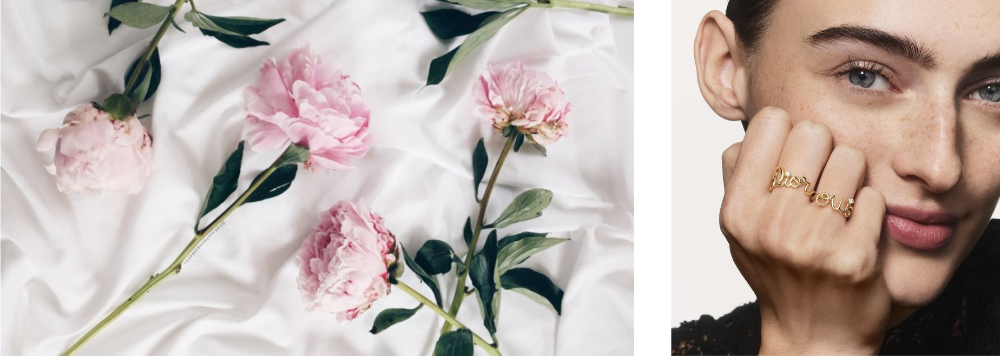
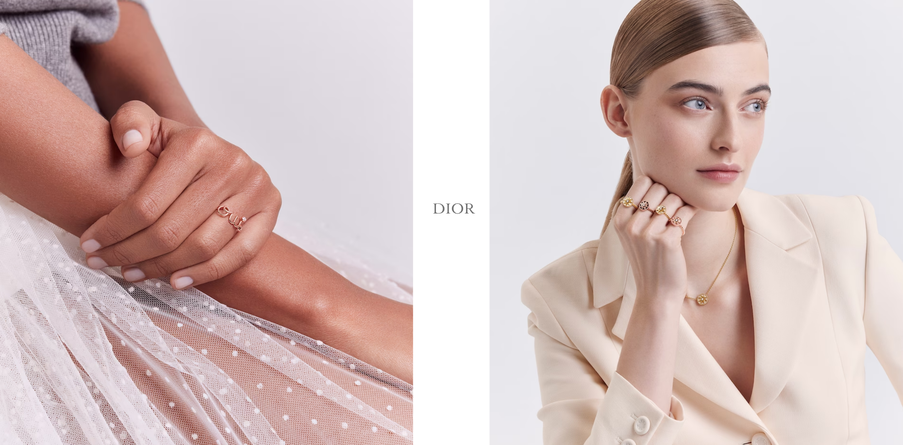
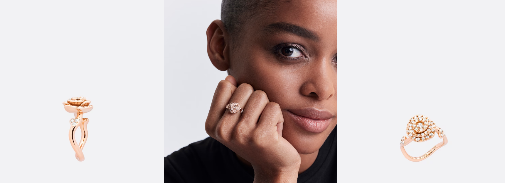
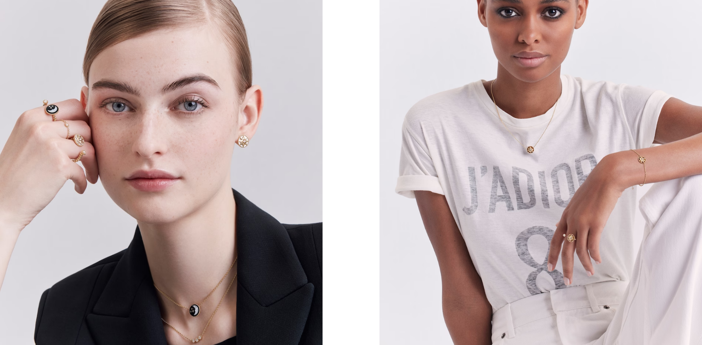

Die Ringe sind wie fantastische, schillernde Erzählungen, die unsere Gesten unterstreichen und
die ganze virtuose Kreativität von Victoire de Castellane offenbaren.


Castellane präsentiert die aufgehende Rosenknospe in der Rose Dior Couture Kollektion, wie ein Versprechen für
die bevorstehenden Momente der Freude. Die neue, stilisierte und sinnliche Kreation erinnert an die Rose, die bereits die Couture-Looks von Christian Dior sowie seinen Nachfolgern zierte


Die neue Schmuckkollektion von Victoire de Castellane trägt den Namen Mimirose und zelebriert den 20. Jahrestag von Dior Joaillerie. Durch ihre Feinheit und die Edelsteine erinnert
sie an Mimioui und interpretiert zugleich mit ihrem zarten Grain-de-riz-Besatz, der jeden Stein schmückt, die Rose des vents Kollektion neu.